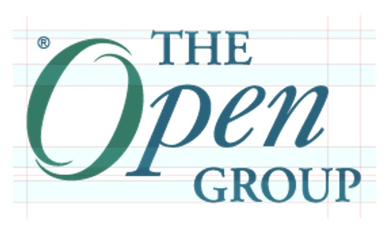
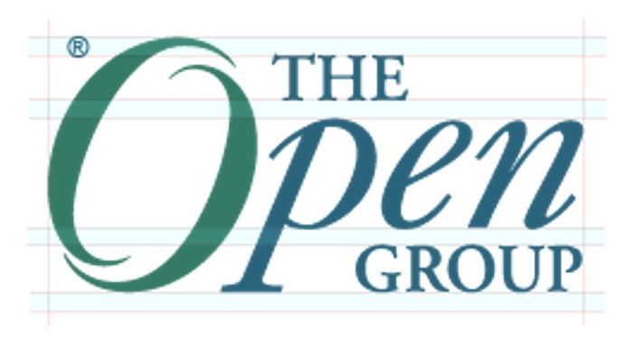
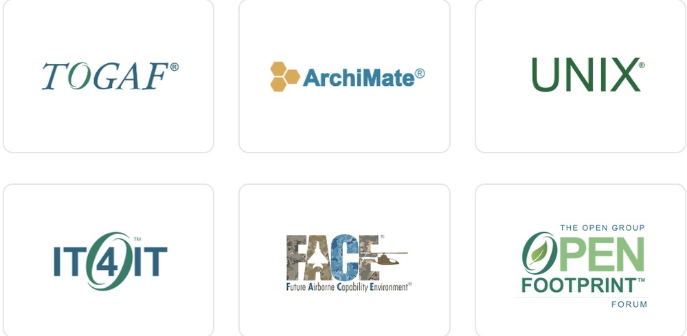
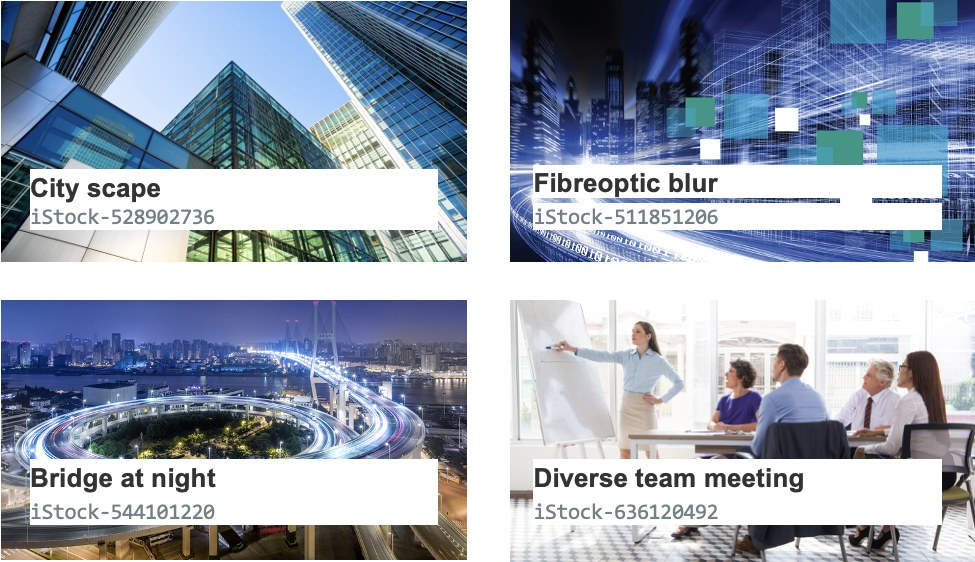
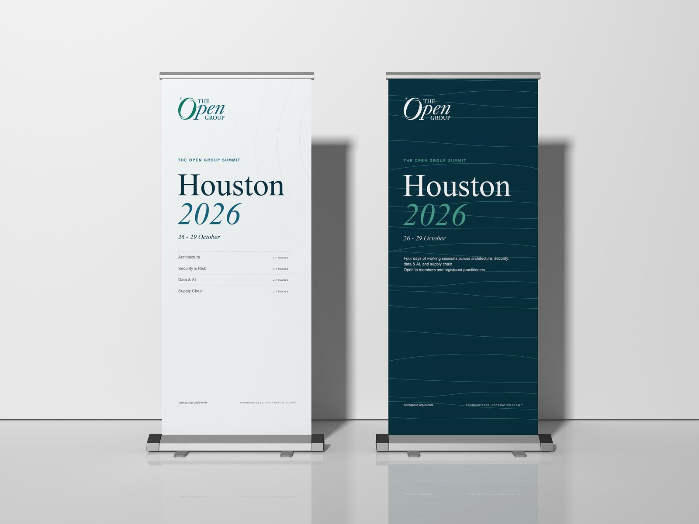
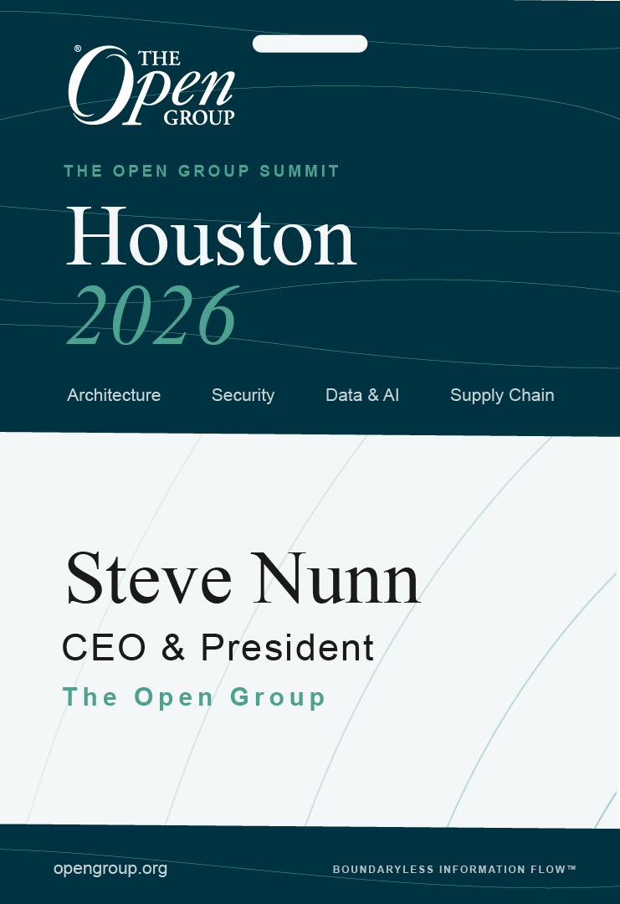
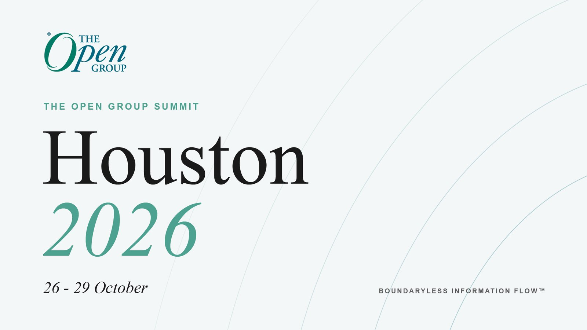

The Open Group
Brand Refresh
A proposal to refresh The Open Group's visual identity. I kept the parts people already recognise, tightened everything around them, and mocked it up on our Houston 2026 summit to show how it would work.
Where it started
Keep what people recognise
This is a self-initiated proposal. I wanted to see how far The Open Group's identity could move forward without losing what people already know.
The Open Group has been around since 1996 and its logo is well known in enterprise architecture, so starting again would have thrown that away. The opportunity was in everything around it: eight brand colours with no rules for which one leads, one headline font doing every job, a different logo style for every standard and forum, and a brand manual built mainly for print.
So I went through the brand one piece at a time and set out what's there now next to what I'd change.
The proposal
Six fixes
The logo
I'd keep the logo and fix its spacing. THE and GROUP move onto the same baseline grid as Open, and the registered mark stops floating off the edge.


Sub-brands
TOGAF, ArchiMate, UNIX, IT4IT and the rest each have their own font and colour. I'd replace them with one template: the name set in Times, a short Arial strap underneath and a small O mark. A new forum could drop straight in without a redesign.

Colour
Logo Blue leads and Logo Green accents, roughly 60, 30 and 10 with the neutrals. Orange and purple move to warning and info roles, which matches the colour tokens already in our CSS.
#006680#007D66#575756#82A3B0#F2F2F2#73C3ED#009959#E58F33Type
Times New Roman for headlines and standard titles, Arial for everything else. Both are already on every machine. No new licences.
Headline · Arial Bold
Open standards.
Body · Arial
The Open Group leads the development of open, vendor-neutral technology standards and certification.
Headline · Times New Roman
Open standards.
Body · Arial
The Open Group leads the development of open, vendor-neutral technology standards and certification.
Quotes · Times New Roman Italic
“Boundaryless Information Flow”
Imagery
Instead of stock photos, a simple diagram kit with five parts: bands, blocks, arrows, dots and labels. Anyone could build a clear architecture diagram from it in about 30 seconds.

Design tokens
Half the work is done. There's already a brand-colors.css file, so I mapped out what it needs next: fonts, a spacing scale and core components. That way the brand lives in code as well as in a PDF.
- File formats: .eps (PMS)
- File formats: .eps (CMYK)
- File formats: .gif (RGB)
- Print standards
- Stationery: business cards
- Stationery: letterhead
- Stationery: envelope
- Apparel ribbon sizing
/* already in brand-colors.css */ --color-primary: #006680; --color-accent: #007D66; --color-secondary: #82A3B0; --color-success: #009959; --color-warning: #E58F33; --color-error: #FF1D25; /* to add */ --font-display: "Times New Roman"; --font-body: Arial; --space-scale: 4 8 16 24 32px; components: button, card, badge
What it could look like
Houston 2026
To show it working in practice, I mocked up the new system for our Houston 2026 summit: title slides, lanyards and pull-up banners.



Concept mock-ups made for this proposal. They aren't official event materials.